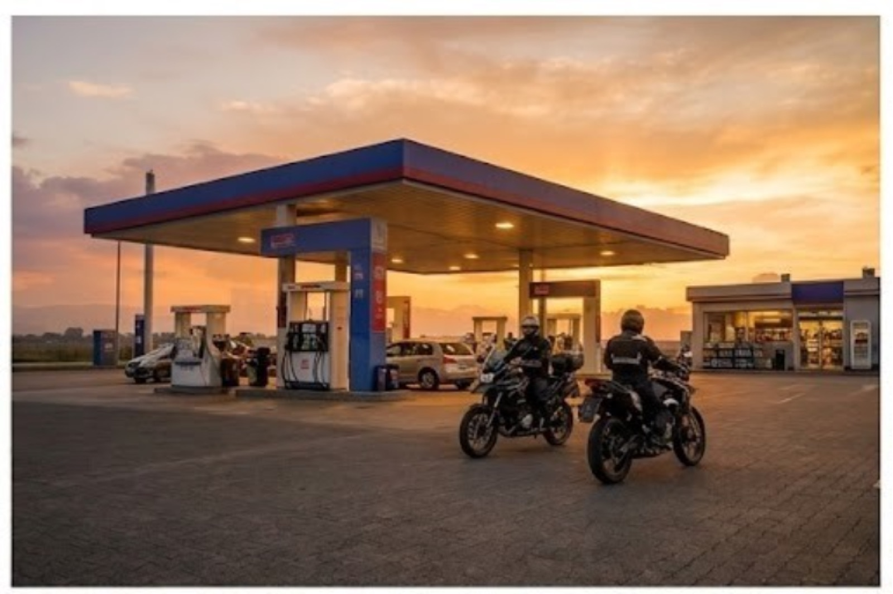

Managing Fuel Stops, Breaks, and Rest Stops Efficiently: The Key to a Safer Motorcycle Trip
Description
Learn how to plan fuel stops, rest breaks, and hydration effectively to reduce fatigue, improve safety, and make every motorcycle journey smoother and more enjoyable.
Every memorable motorcycle trip is about more than just reaching the destination. It's about enjoying the open road, exploring new places, and riding comfortably from start to finish. While most riders spend time planning routes and preparing their motorcycles, one important aspect often gets overlooked is planning fuel stops, rest breaks, and hydration.
Whether you're heading out for a weekend ride, a full-day tour, or a multi-day adventure, a well-planned stopping strategy helps reduce fatigue, prevent unnecessary delays, and keep every ride enjoyable.
Plan Your Stops before You Ride
Long-distance riding demands constant attention. Riders are continuously adapting to traffic, weather, road conditions, and changing terrain, which can lead to both physical and mental fatigue.
Before setting off, understand your motorcycle's real-world fuel range instead of relying only on manufacturer's figures. Factors such as riding style, luggage, traffic, and terrain all affect fuel efficiency. A good practice is to refuel when your tank reaches around half capacity rather than waiting until reserved. This provides a comfortable buffer for unexpected detours or areas with limited fuel availability.
While planning your route, identify fuel stations, rest stops, and meal breaks in advance. If you're traveling through remote areas, mark backup fuel stations to avoid unnecessary stress during the journey.

Schedule Regular Breaks and Stay Hydrated
Taking breaks isn't a sign of slowing down—it's an essential part of safe riding. A short break every 90 to 120 minutes allows you to stretch, relax, and regain focus before continuing.
Hydration is equally important. Riding gear, warm weather, and long hours on the road can lead to dehydration even if you don't feel thirsty. Drinking water at every stop helps maintain concentration, improves reaction time, and reduces fatigue, allowing you to stay alert throughout the ride.
Keeping your body refreshed is just as important as keeping your motorcycle fueled.
Pick Stops That Keep You Refreshed
Not every stop needs to be just a fuel station. Whenever possible, choose locations that provide safe motorcycle parking, clean washrooms, drinking water, food, and a comfortable place to rest.
Well-planned stops help riders recharge without disrupting the day's schedule. They also create opportunities to enjoy scenic viewpoints, local cafés, or short breaks that make the journey more enjoyable.
Ride Smarter with Rydyt
Planning becomes even easier with Rydyt, which helps riders organize routes, coordinate fuel and rest stops, and stay connected throughout the journey. With features like route planning, live ride tracking, group location sharing, and rider communication, Rydyt makes it simple to keep everyone informed and ensures no rider gets left behind.
Whether you're riding solo or with a group, having all your ride information in one place allows you to spend less time managing logistics and more time enjoying the road.
Final Thoughts
Efficient fuel stops, regular breaks, and proper hydration may seem like small details, but they have a significant impact on every motorcycle trip. A little planning before you ride can reduce fatigue, improve safety, and make the entire journey more comfortable.
Whether you're exploring mountain roads, cruising highways, or embarking on a cross-country adventure, thoughtful stop planning allows you to focus on what truly matters—experiencing every mile with confidence and enjoying the ride to its fullest with Rydyt.
Invite. Ride. Track. Talk.
— The Rydyt Team